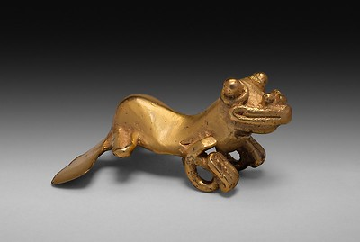

Frog Cultural Significance
Frogs have been featured in mythology, fairy tales and popular culture. In traditional Chinese myths, the world rests on a giant frog, who would try to swallow the moon, causing the lunar eclipse. Frogs have been featured in religion, folklore, and popular culture. The ancient Egyptians depicted the god Heqet, protector of newborns, with the head of a frog. For the Mayans, frogs represented water, crops, fertility and birth and were associated with the god Chaac. In the Bible, Moses unleashes a plague of frogs on the Egyptians. Medieval Europeans associated frogs and toads with evil and witchcraft. The Brothers Grimm fairy tale The Frog Prince features a princess taking in a frog and it turning into a handsome prince. In modern culture, frogs may take a comedic or hapless role, such as Mr. Toad of the 1908 novel The Wind in the Willows, Michigan J. Frog of Warner Bros. Cartoons, the Muppet Kermit the Frog and in the game Frogger.